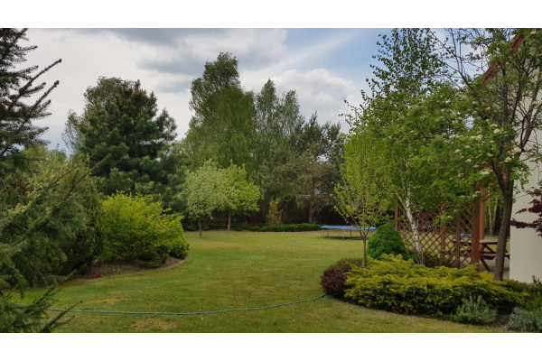
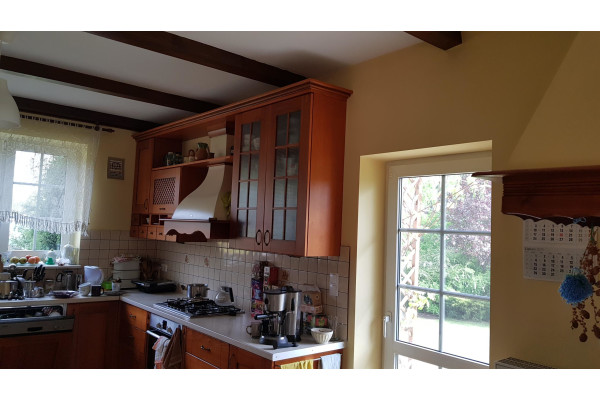

DUŻY DOM PRZY LESIE, WSZĘDZIE BLISKO! (otwocki, Wiązowna, Izabela)
419 000 PLN
Numer oferty
Typ transakcji
Cena
Powierzchnia
Cena za m2
Liczba pokoi
Piętro
Powierzchnia działki m2
Rok budowy
Standard wykończenia
Stan domu
Rynek
Długość
Szerokość
Typ dachu
43
Sprzedaż
1 350 000 PLN
280 m2
4 821 PLN / m2
6
parter
1 550
2006
bardzo dobry
do odświeżenia
wtórny
46
30
blacho dachówka
 |
 |  |
Szybka przeprowadzka do idealnego miejsca, bez budowy, zgód, odbiorów i innych papierków. To możliwe dzięki naszej ofercie. Na sprzedaż mamy bardzo ładny, duży dom idealny dla rodziny. Dom ma 13 lat i wymaga lekkiego odświeżenia, remontu lub aranżacji wszystko zależy od Państwa potrzeb i gustu, dom ma olbrzymi potencjał trzeba go tylko trochę dopieścić. Wchodzimy drewnianymi drzwiami, w dużym przedpokoju, duża szafa wnękowa potem mamy kolejne drzwi drewniane i przed nami salon z jadalnią i schodami na górę. Plan jest otwarty z dużymi drzwiami tarasowymi na ogród. Mnóstwo światła i przestrzeni. W salonie oczywiście kominek, drewniana podłoga i drewniane belki - bardzo ładny detal. Kolejnym ciekawym akcentem jest piec kaflowy w jadali, a z jadali przechodzimy do bardzo dobrze doświetlonej kuchni z wyjściem na ogród. Dużo miejsca a mogłoby go być jeszcze więcej bo wyburzeniu ścian oddzielających kuchnię od salonu - temat do przemyślenia. Na dole mamy jeszcze łazienkę z prysznicem, garaż na dwa auta spiżarnię i pralnię czyli wszystko co powinno zapewnić komfort rodzinie. Na górę prowadzą drewniane schody a tam mamy cztery sypialnie w tym jedna małżeńska z garderobą i łazienką, którą trzeba urządzić, obecnie pomieszczenie to pełni funkcję składzika. Na piętrze jeszcze jest gabinet, wc i łazienka dla dzieci oraz dwie szafy wnękowe, które trzeba zabudować. I znów dużo miejsca, dużo możliwości aranżacji. Media wszystkie oprócz kanalizacji, jest przydomowa oczyszczalnia ścieków. Dookoła domu ładny ogród z nasadzeniami, pergolami, warzywniakiem i starymi drzewami. Przed domem chodnik i podjazd z kostki brukowej, brama na pilota. Dojazd drogą wewnętrzną, dom jest schowany, niedaleko las a wokół niewielu sąsiadów. Idealne miejsce na odpoczynek po pracy. A do pracy czy do szkoły świetny dojazd, kursuje tu autobus L48 do Wesołej i Sulejówka, samochodem szybki dojazd do Zakrętu czy węzła w Michałówku oraz budującej się obwodnicy Warszawy, blisko będzie do budowanego, ogromnego Centrum Handlowego w Góraszce. Jeśli komuś mało ziemi to obok jest działka do kupienia - 1500 metrów, może basen, a może boisko. Zapraszam do oglądania tego uroczego zakątka, to idealne miejsce do życia, cicho a dobra komunikacja, dużo miejsca, dużo przyrody, mało sąsiadów a do tego cena jak na ten metraż i okolicę bardzo rozsądna. Niewielkie nakłady a będzie tu bajka!!!